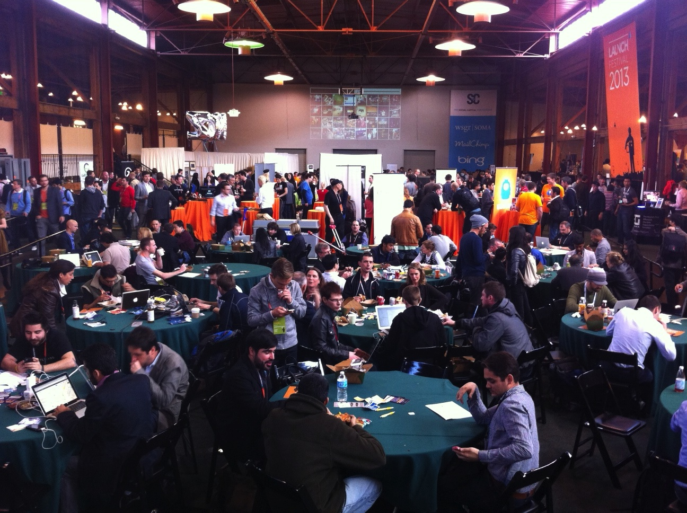
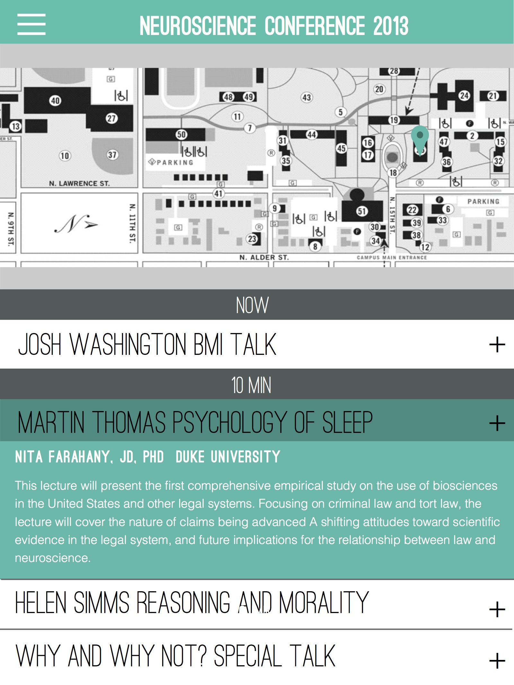
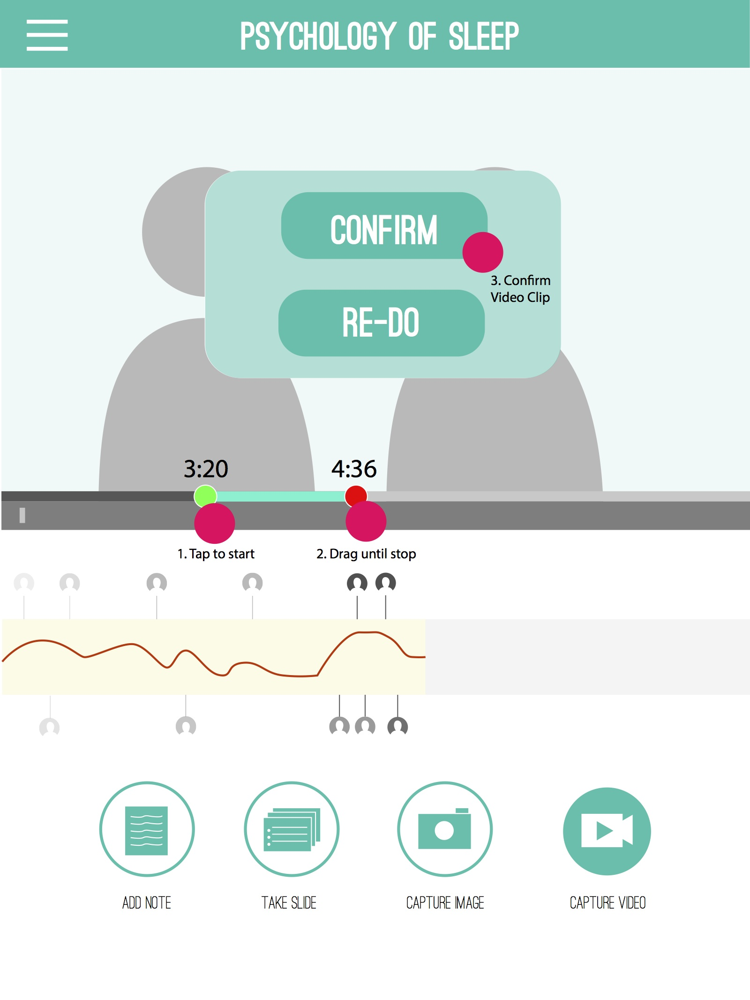
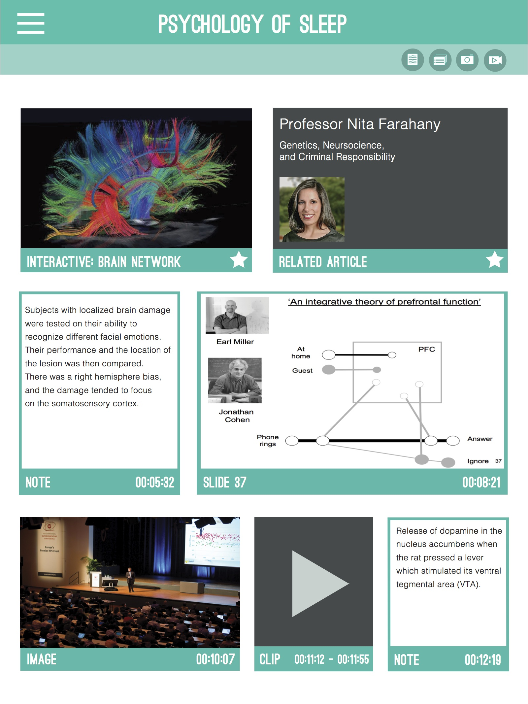
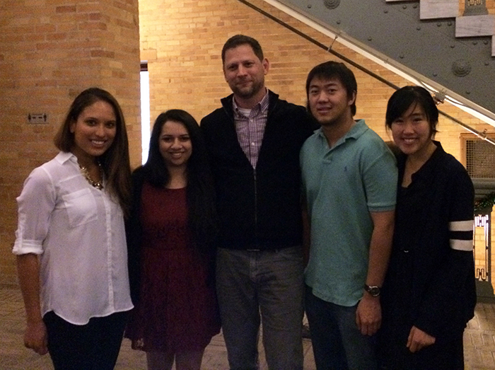

BINDER

Augmented Note-taking
Binder is an augmented note-taking app for a live event. It enables real-time media capture,
note customization, and event-specific generated content. Binder helps users organize
the information and data they want to keep from each event in a digestible and shareable format.

Our team was given the prompt of creating a second screen mobile media app.
We refined this problem through user research and
found that a lot of people didn't want to be bothered when watching TV.
We thought, when would a second screen full of information and data
add to the overall experience? That's when we looked in conferences and lectures.
We interviewed more people and many really enjoyed attending conferences but felt
overwhelmed by the vast number of people and information thrown at them.
It was hard to keep track of the people they met and take notes on key points
they encountered. The ipad app we designed, Binder, solves this problem.

Crowded Launch Festival conference in San Francisco
Demo
Conferences can use Binder to distribue a digital "conference package" that includes the conference
schedule, network of conference goers, and other real-time notifications. When conference goers opens up Binder,
he or she can select the conference and add it to his or her "binders". Thus, each conference or lecture is
a "binder" inside our app.
I collaborated with Shefani to create the following mockups which demostrate real-time media capture
presentation syncing, several note-taking and annotation modes, and robust social features.
I used Marvel to prototype the experience. Just click anywhere on the screen
and a blue field will indicate where the clickable area is.
Features
Personalize Conference Schedule
Conference schedule is automatically loaded onto binder. User can add upcoming talks to his or her
personal schedule and get reminders when they are about to happen.

Real-time Media Capture
With wifi location syncing, Binder knows when a user is attending a talk and automatically displays the
note-taking page that includes a live video stream of the talk. When users hear something interesting during the
talk, they can take a short clip of the live stream. Other real-time media features include a live chat
correlated with the live stream video and visualization of when more or less people are engaged during the talk.

Visual Information Display
Display all notes, pictures video clips from the conference as well those from outside research on one board.
Each piece of information is resizable and rearrangable. Organize it the way you want!

Lessons Learned
This was one of my first app designs where I engaged the entire design process, focusing on user research and
iteration testing to define and constantly adjust our approach to create a truely different
"second-screen" interaction.
I was able to delve into the design process with Binder and learned value skills in interviewing users and
analyzing user research, to list assumptions and address each one. If we didn't do so much research
to understand our assumptions, we would have pigeon-holed ourselves in
creating a TV show companion app
Special thanks to Tony Sokolowski, VP of Design at Vertigo, who challenged us with the prompt and worked with
us throughout the design process and giving us tips and suggestions on storyboarding and user testing.
Team
Binder is a Fall 2013 team project within Berkeley Innovation, UC Berkeley's human-centered
design organization, to create Binder. Team members include Vandana Pai, Shefali Netke,
Jason Gee, and myself. We had the opportunity to work with design consulting firm,
Vertigo Software, Inc., to create a modern second-screen tablet application.
Throughout our process, we focused on user research, multiple iterations
of wireframes and prototypes, and concept generation.

Binder team with Tony Sokolowski, VP of Design at Vertigo, who worked with us throughout the project
Read the
Vertigo article
about the project.